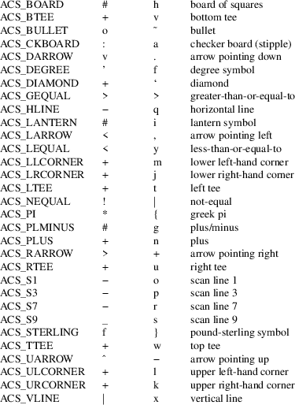

addch, waddch, mvaddch, mvwaddch, echochar, wechochar − add a character (with attributes) to a curses window, then advance the cursor
#include <curses.h>
int
addch(const chtype ch);
int waddch(WINDOW *win, const chtype
ch);
int mvaddch(int y, int x, const
chtype ch);
int mvwaddch(WINDOW *win, int y,
int x, const chtype ch);
int
echochar(const chtype ch);
int wechochar(WINDOW *win, const chtype
ch);
Adding
characters
The addch, waddch, mvaddch and
mvwaddch routines put the character ch into
the given window at its current window position, which is
then advanced. They are analogous to putchar(3) in
stdio(3). If the advance is at the right margin:
|
• |
The cursor automatically wraps to the beginning of the next line. | ||
|
• |
At the bottom of the current scrolling region, and if scrollok is enabled, the scrolling region is scrolled up one line. | ||
|
• |
If scrollok is not enabled, writing a character at the lower right margin succeeds. However, an error is returned because it is not possible to wrap to a new line |
If ch is a tab, newline, carriage return or backspace, the cursor is moved appropriately within the window:
|
• |
Backspace moves the cursor one character left; at the left edge of a window it does nothing. | ||
|
• |
Carriage return moves the cursor to the window left margin on the current line. | ||
|
• |
Newline does a clrtoeol, then moves the cursor to the window left margin on the next line, scrolling the window if on the last line. | ||
|
• |
Tabs are considered to be at every eighth column. The tab interval may be altered by setting the TABSIZE variable. |
If ch is any other nonprintable character, it is drawn in printable form, i.e., the ^X notation used by unctrl(3X). Calling winch after adding a nonprintable character does not return the character itself, but instead returns the printable representation of the character.
Video attributes can be combined with a character argument passed to addch or related functions by logical-ORing them into the character. (Thus, text, including attributes, can be copied from one place to another using inch(3X) and addch.) See the curs_attr(3X) page for values of predefined video attribute constants that can be usefully OR’ed into characters.
Echoing
characters
The echochar and wechochar routines are
equivalent to a call to addch followed by a call to
refresh(3X), or a call to waddch followed by a
call to wrefresh. The knowledge that only a single
character is being output is used and, for non-control
characters, a considerable performance gain may be seen by
using these routines instead of their equivalents.
Line
Graphics
The following variables may be used to add line drawing
characters to the screen with routines of the addch
family. The default character listed below is used if the
acsc capability does not define a terminal-specific
replacement for it, or if the terminal and locale
configuration requires Unicode but the library is unable to
use Unicode.
The names are taken from VT100 nomenclature.

All routines return the integer ERR upon failure and OK on success (the SVr4 manuals specify only “an integer value other than ERR”) upon successful completion, unless otherwise noted in the preceding routine descriptions.
Functions with a “mv” prefix first perform a cursor movement using wmove, and return an error if the position is outside the window, or if the window pointer is null.
If it is not possible to add a complete character, an error is returned:
|
• |
If scrollok is not enabled, writing a character at the lower right margin succeeds. However, an error is returned because it is not possible to wrap to a new line | ||
|
• |
If an error is detected when converting a multibyte character to a sequence of bytes, or if it is not possible to add all of the resulting bytes in the window, an error is returned. |
Note that addch, mvaddch, mvwaddch, and echochar may be macros.
All these functions are described in the XSI Curses standard, Issue 4. The defaults specified for forms-drawing characters apply in the POSIX locale.
ACS
Symbols
X/Open Curses states that the ACS_ definitions are
char constants. For the wide-character implementation
(see curs_add_wch), there are analogous WACS_
definitions which are cchar_t constants. Some
implementations are problematic:
|
• |
Some implementations define the ACS symbols to a constant (such as Solaris), while others define those to entries in an array. |
This implementation uses an array acs_map, as done in SVr4 curses. NetBSD also uses an array, actually named _acs_char, with a #define for compatibility.
|
• |
HPUX curses equates some of the ACS_ symbols to the analogous WACS_ symbols as if the ACS_ symbols were wide characters. The misdefined symbols are the arrows and other symbols which are not used for line-drawing. | ||
|
• |
X/Open Curses (issues 2 through 7) has a typographical error for the ACS_LANTERN symbol, equating its “VT100+ Character” to I (capital I), while the header files for SVr4 curses and the various implementations use i (lowercase). |
None of the terminal descriptions on Unix platforms use uppercase-I, except for Solaris (i.e., screen’s terminal description, apparently based on the X/Open documentation around 1995). On the other hand, the terminal description gs6300 (AT&T PC6300 with EMOTS Terminal Emulator) uses lowercase-i.
Some ACS symbols (ACS_S3, ACS_S7, ACS_LEQUAL, ACS_GEQUAL, ACS_PI, ACS_NEQUAL, ACS_STERLING) were not documented in any publicly released System V. However, many publicly available terminfos include acsc strings in which their key characters (pryz{|}) are embedded, and a second-hand list of their character descriptions has come to light. The ACS-prefixed names for them were invented for ncurses(3X).
The displayed values for the ACS_ and WACS_ constants depend on
|
• |
the library configuration, i.e., ncurses versus ncursesw, where the latter is capable of displaying Unicode while the former is not, and | ||
|
• |
whether the locale uses UTF-8 encoding. |
In certain cases, the terminal is unable to display line-drawing characters except by using UTF-8 (see the discussion of NCURSES_NO_UTF8_ACS in ncurses(3X)).
Character
Set
X/Open Curses assumes that the parameter passed to
waddch contains a single character. As discussed in
curs_attr(3X), that character may have been more than
eight bits in an SVr3 or SVr4 implementation, but in the
X/Open Curses model, the details are not given. The
important distinction between SVr4 curses and X/Open Curses
is that the non-character information (attributes and color)
was separated from the character information which is packed
in a chtype to pass to waddch.
In this implementation, chtype holds an eight-bit character. But ncurses allows multibyte characters to be passed in a succession of calls to waddch. The other implementations do not do this; a call to waddch passes exactly one character which may be rendered as one or more cells on the screen depending on whether it is printable.
Depending on the locale settings, ncurses will inspect the byte passed in each call to waddch, and check if the latest call will continue a multibyte sequence. When a character is complete, ncurses displays the character and moves to the next position in the screen.
If the calling application interrupts the succession of bytes in a multibyte character by moving the current location (e.g., using wmove), ncurses discards the partially built character, starting over again.
For portability to other implementations, do not rely upon this behavior:
|
• |
check if a character can be represented as a single byte in the current locale before attempting call waddch, and | ||
|
• |
call wadd_wch for characters which cannot be handled by waddch. |
TABSIZE
The TABSIZE variable is implemented in SVr4 and other
versions of curses, but is not part of X/Open curses (see
curs_variables(3X) for more details).
If ch is a carriage return, the cursor is moved to the beginning of the current row of the window. This is true of other implementations, but is not documented.
curses(3X), curs_attr(3X), curs_clear(3X), curs_inch(3X), curs_outopts(3X), curs_refresh(3X), curs_variables(3X), putc(3).
Comparable functions in the wide-character (ncursesw) library are described in curs_add_wch(3X).